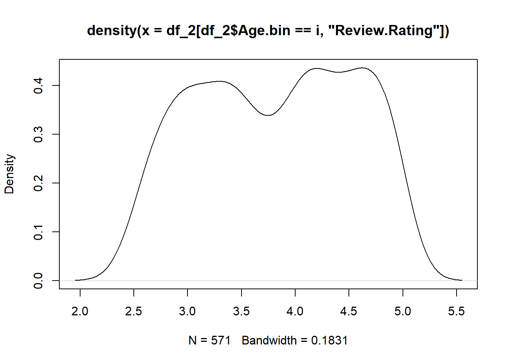

library(dplyr)
library(ggplot2)
library(forcats)
library(gt)
library(gtExtras)
library(rstatix)
library(hrbrthemes)
library(viridis)
library(maps)
library(chisq.posthoc.test)Customer Preference Analytics
Over the past decade, there has been a transformation in global retail with online sales contributing 20% of total global retail sales. According to Statista (2023) the online sales for the fashion market were valued at $759.5 billion in 2022 and are expected to increase to $1.2 trillion by 2027 showing a significant shift of consumers towards digital platforms and changes in the purchasing behavior of consumers. On one hand, new clothing trends are constantly emerging, largely influenced by online influencers and popular film stars. These trends are quickly spread to people through various online social media platforms, movies, and advertisements Giri, Thomassey, and Zeng (2019). Social Media, in particular, has made fashion more accessible by providing users with instant exposure to the latest clothing styles, while targeted advertisements further drive consumer interest.@cleofasbrand has also quoted that fashion giants like H&M and Zara have very high influence over the customers as they can launch a new fashion trend that will be widely accepted by consumers around the globe. This evolution has not only diversified the fashion industry but also shown new ways for customers to engage with the purchase of clothing and accessories.@glinska2017customer analyzed the Polish data and also highlighted that there has been a surge of 11.6% in online shoppers from 2012 to 2016. Not only this, the variety of clothing, and convenience of purchasing have broadly influenced customers to shift from offline retail market to online platforms.
On the other hand, this shift has also occurred due to recent pandemic situations around the globe. After COVID-19, many behavioral changes occurred in individuals that impacted how they purchase goods. During the COVID period, the fashion industry was one of the industries that were severely affected by the lockdown which made consumers shift towards e-commerce platforms Cleofas et al. (n.d.). Additionally, Wibowo (2024) has also mentioned how a famous fashion industry, Santoon, in Indonesia, faced problems with e-commerce despite being a market leader in the country.
These shifts need to be understood to help new online businesses survive in this competitive market. Customer preferences can be identified by analyzing past data, which helps develop effective strategies for new companies. Analyzing past data is a crucial step for understanding customer needs, purchase patterns, and much more. The customer needs a more personalized service that can be carried out by analyzing past data and finding meaningful insights from the data @ giri2019customer. According to @ giri2019customer, the main strategy of the fashion industry should be expanding its customer base and finding hidden insights that allow businesses to retain their customers.
Factors Affecting Customer Preference
The purchasing patterns of the customers are influenced by many factors. These factors vary from offline to online retail. First of all, detailed product information has more influence on customer purchase.@wibowo2024exploring identified that quality and size are the primary factors influencing customers’ preferences for fashion products. Also, highlighted that product information is crucial for e-commerce platforms, which was missing on Santoon’s social media platform. The author identified that customers view products at offline stores but purchase them online this suggests that product information needs to be detailed.
Secondly, past customer reviews are also important as they can leveraged to improve products and services. Not only this,Wibowo (2024) described that customer reviews play a crucial role in enhancing the online product. Moreover, the writer found that online exclusive offer such as free shipping and limited-time discounts affects the customer preference for purchasing online. In addition, secure payment options, return policies, and efficient delivery improve the recency of customers.
Furthermore,Cleofas et al. (n.d.) found in the study that brand was the most important factor contributing 43% among all the factors followed by clothing function, and place of purchase. Kod (n.d.) also quoted that across all the respondents brand name, lower price, and shopping from home were the motivators for the online shoppers.
On the one hand,Kod (n.d.)’s research on the Polish market found that age does not diversify customers’ decisions despite having significant results of the Mann-Whitney U test for different age groups. On the other hand,Glińska and Tomaszewska (2017) also researched online retail in Poland and found that there are significant differences between age groups’ purchasing patterns. The author found that individuals aged less than 25 saw online shopping as taking part in loyalty programs and spending time whereas the motives of people who had an age above 25 were making purchases as around-the-clock availability, more information about products, and possibilities to find special products. Additionally, Delimarta and Rahadi (2021) found that brand image, price, quality, and design are positively related to the customer’s willingness to purchase the product.
The Role of Data Analytics in Understanding and Responding to Consumer Preferences:
The role of a data analyst in general is to uncover hidden patterns, and trends, and generate insights that help organizations make informed decisions. This can be carried out with the help of various tools to visualize and analyze the data. The duty of data analysts is also crucial for identifying customer preferences. According to Giri, Thomassey, and Zeng (2019), analytics carried out to find the hidden patterns in customer purchases is called Customer Analytics. The Company’s business goal defines how to incorporate it into business intelligence. The writer also identified the sources of the data extraction. Firstly, website traffic contains data such as page views, click-through rates, and time spent on the website. Moreover, purchase history shows records of purchases which can be used to identify the average order value, preferred brands, and categories. Additionally, from the customer feedback insights like product quality, customer service, and overall satisfaction can be derived. These customers can be clustered into separate groups (Sulianta, Ulfah, and Amalia 2024) using the clustering technique of k-mean clustering. The author clustered customers into 4 clusters based on price, quality, and brand. Moreover, the cluster also has customers who buy costly or premium products. Okofu et al. (2024) carried out a sentiment-based analysis for identifying customer behavior and based on the Bayesian Network further derived parameters of interest such as Usefulness, Usage Ease, Purchase Intension, User-trust.
Benefits of Data Analytics
The insights can be utilized by fashion retailers to enhance their customer service and marketing. Glińska and Tomaszewska (2017) concluded the research and identified age-dependent differences in consumer behavior which can be used in marketing strategies to target age groups with personalized offers and discounts on products, recommendations, and content that has customer-specific interest.
Cleofas et al. (n.d.) also identified that purchases are driven by purchases for everyday use and recreation without immediate purchase intention. This understanding helps inform product design assortment planning, and inventory management, ensuring that businesses offer products that meet customer demands. With the help of data analysis, we can enhance the customer experience, improve website usability, and improve the purchasing process which leads to customer satisfaction (Okofu et al. 2024).
Methods used
Thematic analysis: It can find recurring patterns and generate a theme (Wibowo 2024). This method minimally organizes and describes the data set in detail. Wibowo (2024) used thematic analysis to find recurring patterns related to customer preference of purchasing fashion items online versus offline.
Triangulation: According to Wibowo (2024), triangulation is used to validate research findings by comparing data from different sources. Suppose one source triangulated data from customer interviews, company owner observations, and existing research on customer decision-making in the fashion industry.
Conjoint Analysis: This method is used to find the relative importance of different product attributes in customer purchase decisions. Cleofas et al. (n.d.) and Suzianti, Faradilla, and Anjani (2015) used the conjoint analysis for Customer preference analysis.
CRISP-DM (Cross-Industry Standard Process for Data Mining): Sulianta, Ulfah, and Amalia (2024) used this methodology which has stages like data collection, cleaning, analysis, and interpretation. These phases produce specific outputs that lead to the next steps in the project.
K-Means Clustering: It is an unsupervised machine learning algorithm used to cluster or group the data points into clusters based on their similarity. This method can be used to segment customers based on shared characteristics such as price sensitivity or brand preference (Sulianta, Ulfah, and Amalia 2024).
Elbow method: The elbow method is used in conjunction with K-Means Clustering to identify the optimal number of clusters. Sulianta, Ulfah, and Amalia (2024) used the elbow method to identify the number of clusters before passing it into the K-Means Clustering algorithm.
These are the common methods used by the researchers to conduct Customer Preference Analysis.
Block Quotes
Research Objective
This study aims to explore the ever-changing market of fashion retail while focusing specifically on factors influencing customer preferences for online e-commerce fashion platforms and how this analysis can be useful in developing business strategies.
Data description
According to the aim of the study to identify customer preferences based on behavioral and demographic traits such as age, gender, recency, preferred delivery method, and transaction amount, the dataset must contain these features or variables. The dataset that this research is going to utilize is available on bhadramohit (2024). This dataset contains data collected from several E-commerce and Retail platforms that depict US consumer trends. This dataset can be used in several analyses such as Customer segmentation, demographic analysis, and much more. Not only this due to the diversity of data, a variety of visualizations can be inherited from this dataset. The dataset also utilizes various GitHub repositories that collected data related to demographic data (Age, Gender, Purchase Amount, and Season) .
The
| Feature Name | Description |
|---|---|
Customer.ID |
Unique identifier for each customer. |
Age |
Age of the customer. |
Gender |
Gender of the customer. |
Item.Purchased |
Item that was purchased by the customer. |
Category |
Category of the purchased item. |
Purchase.Amount..USD. |
Purchase amount in USD. |
Location |
Geographical location of the customer. |
Size |
Size of the purchased item. |
Color |
Color of the purchased item. |
Season |
Season during which the item was purchased. |
Review.Rating |
Customer’s rating for the item. |
Subscription.Status |
Whether the customer has a subscription (e.g., ‘Subscribed’ or ‘Not Subscribed’). |
Payment.Method |
Payment method used for the purchase. |
Shipping.Type |
Type of shipping used (e.g., standard, expedited). |
Discount.Applied |
Whether a discount was applied during the purchase. |
Promo.Code.Used |
Whether a promo code was used for the purchase. |
Previous.Purchases |
Number of previous purchases made by the customer. |
Preferred.Payment.Method |
Customer’s preferred method of payment. |
Frequency.of.Purchases |
Frequency with which the customer makes purchases. |
Age.bin |
Binned category for age (e.g., age group). |
Data Preprocessing
df <- read.csv("shopping_trends.csv")
df_2 <- df
for (i in names(df_2)){
if(class(df_2[[i]]) == "character"){
df_2[[i]] <- factor(df_2[[i]])
}
}
str(df_2)'data.frame': 3900 obs. of 19 variables:
$ Customer.ID : int 1 2 3 4 5 6 7 8 9 10 ...
$ Age : int 55 19 50 21 45 46 63 27 26 57 ...
$ Gender : Factor w/ 2 levels "Female","Male": 2 2 2 2 2 2 2 2 2 2 ...
$ Item.Purchased : Factor w/ 25 levels "Backpack","Belt",..: 3 24 12 15 3 21 17 19 5 8 ...
$ Category : Factor w/ 4 levels "Accessories",..: 2 2 2 3 2 3 2 2 4 1 ...
$ Purchase.Amount..USD. : int 53 64 73 90 49 20 85 34 97 31 ...
$ Location : Factor w/ 50 levels "Alabama","Alaska",..: 17 19 21 39 37 50 26 18 48 25 ...
$ Size : Factor w/ 4 levels "L","M","S","XL": 1 1 3 2 2 2 2 1 1 2 ...
$ Color : Factor w/ 25 levels "Beige","Black",..: 8 13 13 13 22 24 8 5 20 17 ...
$ Season : Factor w/ 4 levels "Fall","Spring",..: 4 4 2 2 2 3 1 4 3 2 ...
$ Review.Rating : num 3.1 3.1 3.1 3.5 2.7 2.9 3.2 3.2 2.6 4.8 ...
$ Subscription.Status : Factor w/ 2 levels "No","Yes": 2 2 2 2 2 2 2 2 2 2 ...
$ Payment.Method : Factor w/ 6 levels "Bank Transfer",..: 3 1 2 5 2 6 4 4 6 5 ...
$ Shipping.Type : Factor w/ 6 levels "2-Day Shipping",..: 2 2 3 4 3 5 3 3 2 1 ...
$ Discount.Applied : Factor w/ 2 levels "No","Yes": 2 2 2 2 2 2 2 2 2 2 ...
$ Promo.Code.Used : Factor w/ 2 levels "No","Yes": 2 2 2 2 2 2 2 2 2 2 ...
$ Previous.Purchases : int 14 2 23 49 31 14 49 19 8 4 ...
$ Preferred.Payment.Method: Factor w/ 6 levels "Bank Transfer",..: 6 2 3 5 5 6 2 3 6 2 ...
$ Frequency.of.Purchases : Factor w/ 7 levels "Annually","Bi-Weekly",..: 4 4 7 7 1 7 6 7 1 6 ...class(df_2$Gender)[1] "factor"names(df_2) [1] "Customer.ID" "Age"
[3] "Gender" "Item.Purchased"
[5] "Category" "Purchase.Amount..USD."
[7] "Location" "Size"
[9] "Color" "Season"
[11] "Review.Rating" "Subscription.Status"
[13] "Payment.Method" "Shipping.Type"
[15] "Discount.Applied" "Promo.Code.Used"
[17] "Previous.Purchases" "Preferred.Payment.Method"
[19] "Frequency.of.Purchases" df_2$Size <- factor(df_2$Size, levels=c("S","M","L","XL"), ordered = TRUE)# Check null values
colSums(is.na(df_2)) Customer.ID Age Gender
0 0 0
Item.Purchased Category Purchase.Amount..USD.
0 0 0
Location Size Color
0 0 0
Season Review.Rating Subscription.Status
0 0 0
Payment.Method Shipping.Type Discount.Applied
0 0 0
Promo.Code.Used Previous.Purchases Preferred.Payment.Method
0 0 0
Frequency.of.Purchases
0 There are no NA values in the dataset.
Data Exploration
barplot(table(df[["Gender"]]))
# for (i in names(df_2)){
# print(i)
# if(class(df_2[[i]]) == "factor"){
# # ggplot(table(df_2),aes(x=i,)) +
# # geom_bar() +
# # coord
# barplot(table(df[[i]]),xlab=i,main = paste("Distribution of ",i))
# }
# else{
# # qqnorm(df[[i]],xlab = i, main = paste("Distribution of",i))
# # qqline(df[[i]],col="red")
# hist(df[[i]],xlab = i, main = paste("Distribution of",i))
#
# }
# }Demographic analysis
Age
# Binning the age in to two categories
df_2$Age.bin <- ifelse(df_2$Age <= 25,"Under 25","Above 25")
# Factorizing the column
df_2$Age.bin <- factor(df_2$Age.bin)# 1. Age
# 1.1 Frequency of Purchase
# Plot to display the count of Customer under 25 and their Frequency of Purchase
data.frame(table(df_2[df_2$Age.bin == "Under 25", "Frequency.of.Purchases"])) %>%
mutate(name = fct_reorder(Var1, desc(Freq))) %>%
ggplot(aes(x = name, y = Freq)) +
geom_bar(stat = "identity") +
labs( x = "Frequency of Purchases", y = "Count",) +
coord_flip()
# Plot to display the count of Customer above 25 and their Frequency of Purchase
data.frame(table(df_2[df_2$Age.bin == "Above 25", "Frequency.of.Purchases"])) %>%
mutate(name = fct_reorder(Var1, desc(Freq))) %>%
ggplot(aes(x = name, y = Freq)) +
geom_bar(stat = "identity") +
labs(x = "Frequency of Purchases", y = "Count") +
coord_flip()
# Chi square test of independence
chisq.test(table(df_2$Age.bin,df_2$Frequency.of.Purchases))
Pearson's Chi-squared test
data: table(df_2$Age.bin, df_2$Frequency.of.Purchases)
X-squared = 4.8901, df = 6, p-value = 0.558# There are not much significance between relation of Age and Frequency of Purchase# 1.2 Promo codes
age_promo_table <- data.frame(table(df_2$Age.bin,df_2$Promo.Code.Used))
colnames(age_promo_table) <- c("Age.bin", "Promo.Code.Used", "Count")
age_promo_table %>%
ggplot(aes(x = Age.bin, y = Promo.Code.Used, fill = Count)) +
geom_tile() +
scale_fill_viridis(discrete = FALSE) +
labs(title = "Heatmap for Age group and Promo code used",
x = "Age group", y = " Promo Code Used", fill = "Count") +
theme_minimal() +
geom_text(aes(label = Count), color = "white", size = 6)age_promo_code <- table(df_2$Age.bin, df_2$Promo.Code.Used)
chisq.test(age_promo_code)
Pearson's Chi-squared test with Yates' continuity correction
data: age_promo_code
X-squared = 0.0078762, df = 1, p-value = 0.9293# 1.3 Review Rating
df_2 %>%
ggplot(aes(x=Age.bin, y = Review.Rating, fill = Age.bin)) +
geom_boxplot()# T test
Age.grouping <- group_by(df_2,Age.bin)
# Assumptions checking
# Outlier checking
identify_outliers(Age.grouping, Review.Rating) [1] Age.bin Customer.ID Age
[4] Gender Item.Purchased Category
[7] Purchase.Amount..USD. Location Size
[10] Color Season Review.Rating
[13] Subscription.Status Payment.Method Shipping.Type
[16] Discount.Applied Promo.Code.Used Previous.Purchases
[19] Preferred.Payment.Method Frequency.of.Purchases is.outlier
[22] is.extreme
<0 rows> (or 0-length row.names)# Normality checking
for (i in unique(df_2$Age.bin)){
# print(i)
qqnorm(df_2[df_2$Age.bin == i,"Review.Rating"])
qqline(df_2[df_2$Age.bin == i,"Review.Rating"],col = "red")
plot(density(df_2[df_2$Age.bin == i,"Review.Rating"]))
boxplot(df_2[df_2$Age.bin == i,"Review.Rating"])
}
shapiro_test(Age.grouping, Review.Rating)# A tibble: 2 × 4
Age.bin variable statistic p
<fct> <chr> <dbl> <dbl>
1 Above 25 Review.Rating 0.957 2.02e-30
2 Under 25 Review.Rating 0.948 3.02e-13# Homogeniety of variance
levene_test(df_2, Review.Rating ~ Age.bin)# A tibble: 1 × 4
df1 df2 statistic p
<int> <int> <dbl> <dbl>
1 1 3898 1.15 0.283t_test(Review.Rating ~ Age.bin, data = df_2)# A tibble: 1 × 8
.y. group1 group2 n1 n2 statistic df p
* <chr> <chr> <chr> <int> <int> <dbl> <dbl> <dbl>
1 Review.Rating Above 25 Under 25 3329 571 -2.37 773. 0.0178cohens_d(df_2,Review.Rating ~ Age.bin, var.equal = FALSE)# A tibble: 1 × 7
.y. group1 group2 effsize n1 n2 magnitude
* <chr> <chr> <chr> <dbl> <int> <int> <ord>
1 Review.Rating Above 25 Under 25 -0.108 3329 571 negligible# p-value < 0.05, there is an effect but small one# 1.4 Category
age_category_table <- data.frame(table(df_2$Age.bin,df_2$Category))
colnames(age_category_table) <- c("Age.bin", "Category", "Count")
age_category_table %>%
ggplot(aes(x = Age.bin, y = Category, fill = Count)) +
geom_tile() +
scale_fill_viridis(discrete = FALSE) +
labs(title = "Heatmap for Age group and Promo code used",
x = "Age group", y = " Promo Code Used", fill = "Count") +
theme_minimal() +
geom_text(aes(label = Count), color = "white", size = 6)age_promo_code <- table(df_2$Age.bin, df_2$Promo.Code.Used)
chisq.test(age_promo_code)
Pearson's Chi-squared test with Yates' continuity correction
data: age_promo_code
X-squared = 0.0078762, df = 1, p-value = 0.9293# Preferred Purchase Method
age_preferred_purhcase_method_table <- data.frame(table(df_2$Age.bin,df_2$Preferred.Payment.Method))
colnames(age_preferred_purhcase_method_table) <- c("Age.bin", "Preferred.Payment.Method", "Count")
age_preferred_purhcase_method_table %>%
ggplot(aes(x = Age.bin, y = Preferred.Payment.Method, fill = Count)) +
geom_tile() +
scale_fill_viridis(discrete = FALSE) +
labs(title = "Heatmap for Age group and Preferred Purchase Method",
x = "Age group", y = " Preferred Purchase Method", fill = "Count") +
theme_minimal() +
geom_text(aes(label = Count), color = "white", size = 6)age_preferred_payment_method_code <- table(df_2$Age.bin, df_2$Preferred.Payment.Method)
chisq.test(age_preferred_payment_method_code)
Pearson's Chi-squared test
data: age_preferred_payment_method_code
X-squared = 2.2058, df = 5, p-value = 0.82# 1.6 Shipping Type by Age
age_shipping <- data.frame(table(df_2$Age.bin, df_2$Shipping.Type))
colnames(age_shipping) <- c("Age", "Shipping_Type", "Count")
# Bar plot for Age vs Shipping Type
age_shipping %>%
ggplot(aes(fill = Age, y = Count, x = Shipping_Type)) +
geom_bar(position = "dodge", stat = "identity") +
labs(title = "Shipping Type by Age", x = "Shipping Type", y = "Count")# Chi-square test for Age and Shipping Type relationship
shipping_table_age <- table(df_2$Age, df_2$Shipping.Type)
chisq.test(shipping_table_age)
Pearson's Chi-squared test
data: shipping_table_age
X-squared = 273.83, df = 260, p-value = 0.266# No significanceGender
# 2.1 Frequency of Purchase
# Plot to display the count of Male customers and their Frequency of Purchase
data.frame(table(df_2[df_2$Gender == "Male", "Frequency.of.Purchases"])) %>%
mutate(name = fct_reorder(Var1, desc(Freq))) %>%
ggplot(aes(x = name, y = Freq)) +
geom_bar(stat = "identity") +
labs(x = "Frequency of Purchases", y = "Count") +
coord_flip()
# Plot to display the count of Female customers and their Frequency of Purchase
data.frame(table(df_2[df_2$Gender == "Female", "Frequency.of.Purchases"])) %>%
mutate(name = fct_reorder(Var1, desc(Freq))) %>%
ggplot(aes(x = name, y = Freq)) +
geom_bar(stat = "identity") +
labs(x = "Frequency of Purchases", y = "Count") +
coord_flip()# Chi square test of independence
chisq.test(table(df_2$Gender, df_2$Frequency.of.Purchases))
Pearson's Chi-squared test
data: table(df_2$Gender, df_2$Frequency.of.Purchases)
X-squared = 3.928, df = 6, p-value = 0.6864# 2.2 Promo Codes
gender_promo_table <- data.frame(table(df_2$Gender, df_2$Promo.Code.Used))
colnames(gender_promo_table) <- c("Gender", "Promo.Code.Used", "Count")
gender_promo_table %>%
ggplot(aes(x = Gender, y = Promo.Code.Used, fill = Count)) +
geom_tile() +
scale_fill_viridis(discrete = FALSE) +
labs(title = "Heatmap for Gender and Promo Code Used",
x = "Gender", y = "Promo Code Used", fill = "Count") +
theme_minimal() +
geom_text(aes(label = Count), color = "white", size = 6)gender_promo_code <- table(df_2$Gender, df_2$Promo.Code.Used)
chisq.test(gender_promo_code)
Pearson's Chi-squared test with Yates' continuity correction
data: gender_promo_code
X-squared = 1381.9, df = 1, p-value < 2.2e-16chisq.posthoc.test::chisq.posthoc.test(gender_promo_code) Dimension Value No Yes
1 Female Residuals 37.20914 -37.20914
2 Female p values 0.00000 0.00000
3 Male Residuals -37.20914 37.20914
4 Male p values 0.00000 0.00000# gender have influence on promo code with Male being# 2.3 Review Rating
df_2 %>%
ggplot(aes(x = Gender, y = Review.Rating, fill = Gender)) +
geom_boxplot()# T test
Gender.grouping <- group_by(df_2, Gender)
# Assumptions checking
# Outlier checking
identify_outliers(Gender.grouping, Review.Rating) [1] Gender Customer.ID Age
[4] Item.Purchased Category Purchase.Amount..USD.
[7] Location Size Color
[10] Season Review.Rating Subscription.Status
[13] Payment.Method Shipping.Type Discount.Applied
[16] Promo.Code.Used Previous.Purchases Preferred.Payment.Method
[19] Frequency.of.Purchases Age.bin is.outlier
[22] is.extreme
<0 rows> (or 0-length row.names)# Normality checking
shapiro_test(Gender.grouping, Review.Rating)# A tibble: 2 × 4
Gender variable statistic p
<fct> <chr> <dbl> <dbl>
1 Female Review.Rating 0.955 4.42e-19
2 Male Review.Rating 0.956 1.02e-27# Homogeneity of variance
levene_test(df_2, Review.Rating ~ Gender)# A tibble: 1 × 4
df1 df2 statistic p
<int> <int> <dbl> <dbl>
1 1 3898 0.208 0.648t_test(Review.Rating ~ Gender, data = df_2)# A tibble: 1 × 8
.y. group1 group2 n1 n2 statistic df p
* <chr> <chr> <chr> <int> <int> <dbl> <dbl> <dbl>
1 Review.Rating Female Male 1248 2652 -0.508 2423. 0.611cohens_d(df_2, Review.Rating ~ Gender, var.equal = FALSE)# A tibble: 1 × 7
.y. group1 group2 effsize n1 n2 magnitude
* <chr> <chr> <chr> <dbl> <int> <int> <ord>
1 Review.Rating Female Male -0.0175 1248 2652 negligible# p-value < 0.05, indicating there is an effect
# No effect of Gender on reviews# 2.4 Category
gender_category_table <- data.frame(table(df_2$Gender, df_2$Category))
colnames(gender_category_table) <- c("Gender", "Category", "Count")
gender_category_table %>%
ggplot(aes(x = Gender, y = Category, fill = Count)) +
geom_tile() +
scale_fill_viridis(discrete = FALSE) +
labs(title = "Heatmap for Gender and Category",
x = "Gender", y = "Category", fill = "Count") +
theme_minimal() +
geom_text(aes(label = Count), color = "white", size = 6)gender_category_code <- table(df_2$Gender, df_2$Category)
chisq.test(gender_category_code)
Pearson's Chi-squared test
data: gender_category_code
X-squared = 0.59842, df = 3, p-value = 0.8968# 2.5 Preferred Purchase Method
gender_preferred_purchase_method_table <- data.frame(table(df_2$Gender, df_2$Preferred.Payment.Method))
colnames(gender_preferred_purchase_method_table) <- c("Gender", "Preferred.Payment.Method", "Count")
gender_preferred_purchase_method_table %>%
ggplot(aes(x = Gender, y = Preferred.Payment.Method, fill = Count)) +
geom_tile() +
# scale_fill_viridis(discrete = FALSE) +
labs(title = "Heatmap for Gender and Preferred Purchase Method",
x = "Gender", y = "Preferred Purchase Method", fill = "Count") +
theme_minimal() +
geom_text(aes(label = Count), color = "white", size = 6)gender_preferred_payment_method_code <- table(df_2$Gender, df_2$Preferred.Payment.Method)
chisq.test(gender_preferred_payment_method_code)
Pearson's Chi-squared test
data: gender_preferred_payment_method_code
X-squared = 4.8776, df = 5, p-value = 0.431# 2.6 Shipping Type
gender_shipping <- data.frame(table(df_2$Gender, df_2$Shipping.Type))
colnames(gender_shipping) <- c("Gender","Shipping_Type","Count")
gender_shipping %>%
ggplot(aes(fill = Gender, y = Count, x = Shipping_Type)) +
geom_bar(position = "dodge", stat = "identity") +
coord_flip()shipping_table <- table(df_2$Gender,df_2$Shipping.Type)
chisq.test(shipping_table)
Pearson's Chi-squared test
data: shipping_table
X-squared = 12.243, df = 5, p-value = 0.03161chisq.posthoc.test(shipping_table) Dimension Value 2-Day Shipping Express Free Shipping Next Day Air
1 Female Residuals 0.594365 -1.174532 2.994333 -1.508771
2 Female p values 1.000000 1.000000 0.033006 1.000000
3 Male Residuals -0.594365 1.174532 -2.994333 1.508771
4 Male p values 1.000000 1.000000 0.033006 1.000000
Standard Store Pickup
1 0.3418083 -1.289533
2 1.0000000 1.000000
3 -0.3418083 1.289533
4 1.0000000 1.000000# Free shipping is preferred by Females more than males# Create a contingency table for Item Purchased and Category
item_category_table <- table(df_2$Item.Purchased, df_2$Category)
# Perform Chi-squared test
item_category_test <- chisq.test(item_category_table)
# Display Chi-squared test results
print(item_category_test)
Pearson's Chi-squared test
data: item_category_table
X-squared = 11700, df = 72, p-value < 2.2e-16View(chisq.posthoc.test(item_category_table))# Frequency plot for size preference
size_count <- table(df_2$Size)
size_df <- size_count %>% data.frame()
colnames(size_df) <- c("size","count")
size_df %>%
ggplot(aes(x = size, y = count, fill = size)) +
geom_bar(stat = "identity") expected_distribution <- c(0.25,0.25,0.25,0.25)
# Perform Chi-Square Goodness of Fit Test
chisq.test(size_count, p = expected_distribution)
Chi-squared test for given probabilities
data: size_count
X-squared = 1035.8, df = 3, p-value < 2.2e-16# size_radar <- rbind(rep(2000,4),rep(0,4),data.frame(table(df_2$Size))$Freq)
# colnames(size_radar) <- c("S","M","L","XL")
# size_radar <- data.frame(size_radar)
# radarchart(size_radar)Bibiliography
References
bhadramohit. 2024. “Customer Shopping Latest Trends Dataset.” https://www.kaggle.com/datasets/bhadramohit/customer-shopping-latest-trends-dataset.
Cleofas, Maria Arielle, Yogi Tri Prasetyo, Ardvin Kester S Ong, and Satria Fadil Persada. n.d. “Brand or Clothing Function? Consumer Preference Analysis on Clothing Apparel Attributes and Design: A Conjoint Analysis Approach.”
Delimarta, Florencia Devina, and Raden Aswin Rahadi. 2021. “Customer Preferences on Sustainable Fashion Purchases: A Conceptual Model.” International Journal of Entrepreneurship and Management Practices 4 (13): 78–88.
Giri, Chandadevi, Sebastien Thomassey, and Xianyi Zeng. 2019. “Customer Analytics in Fashion Retail Industry.” In Functional Textiles and Clothing, 349–61. Springer.
Glińska, Ewa, and Ewelina Tomaszewska. 2017. “Customer Preferences Related to Shopping Online.” Annales Universitatis Mariae Curie-Skłodowska, Sectio H–Oeconomia 51 (2): 87.
Kod, JEL. n.d. “Customer Preferences Related to Shopping Online.” Chemistry 1: 56.
Okofu, Sebastina Nkechi, Kizito Eluemunor Anazia, Maureen Ifeanyi Akazue, Margaret Dumebi Okpor, Amanda Enadona Oweimieto, Clive Ebomagune Asuai, Geoffrey Augustine Nwokolo, Arnold Adimabua Ojugo, and Emmanuel Obiajulu Ojei. 2024. “Pilot Study on Consumer Preference, Intentions and Trust on Purchasing-Pattern for Online Virtual Shops.” Int. J. Adv. Comput. Sci. Appl 15 (7): 804–11.
Statista. 2023. “Global Online Fashion Market Value from 2017 to 2027.” https://www.statista.com/statistics/228706/global-online-fashion-market-value/.
Sulianta, Feri, Khaerani Ulfah, and Endang Amalia. 2024. “Revealing Consumer Preferences in the Fashion Industry Using k-Means Clustering.” International Journal of Engineering Continuity 3 (2): 34–53.
Suzianti, Amalia, Nurza Dwi Prisca Faradilla, and Shabila Anjani. 2015. “Customer Preference Analysis on Fashion Online Shops Using the Kano Model and Conjoint Analysis.” International Journal of Technology 6 (5): 881–85.
Wibowo, Amira Luthfiyya. 2024. “Exploring Santoon’s Customers’ Preferences That Affect Their Purchase Decision for Buying Fashion Products.” Journal of Consumer Studies and Applied Marketing 2 (2): 139–45.